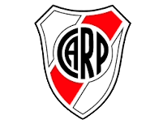
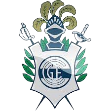
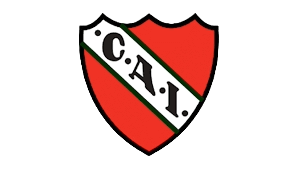
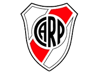
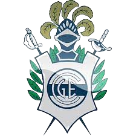
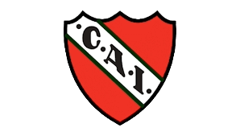

.png) 




 Organizacion e instituciones
El campeonato Argentino esta formado por 28 equipos, de los cuales 2 descienden al final del torneo, y otros 2 ascienden desde el Nacional B.
Entre los equipos de mas renombre estan los llamados 5 grande, los cuales son:Boca Juniors, River Plate, Independiente, Racing y San Lorenzo.
Ademas a ellos se le suman los 2 grandes de La Plata (Estudiantes y Gimnasia), los 2 grandes de Rosario (Newells y Rosario central) y los de Paternal (Velez y Argentinos)
Entre los ultimos campeones estan Boca con 5 titulos y River con 3
Ademas del campeonato estan las copas nacionales, las cuales son 2, la copa argentina, la cual la juegan los equipos argentinos pertenecientes a cualquier categoria asociada a la AFA y la copa de la liga, que se juega en la ultima parte del año y compiten todos los equipos de la primra division.
La Copa argentina se juega desde el 2012, y desde esa fecha sus campeones fueron Boca juniors con 4 titulos, River Plate con 3 titulos, Rosario Central, Arsenal, Huracan y patronato con 1 consagracion
Copas de la liga se jugaron 5, es un formato nuevo, sus campeones fueron Boca Juniors ganando 3 de ellas, Colon y Tigre ganando 1